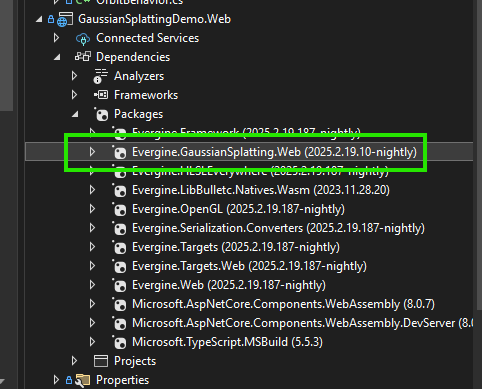
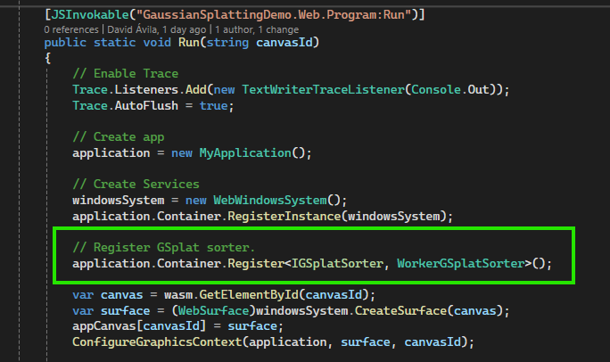
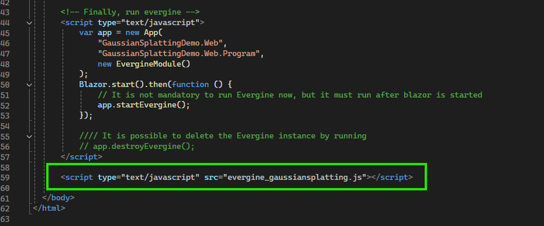
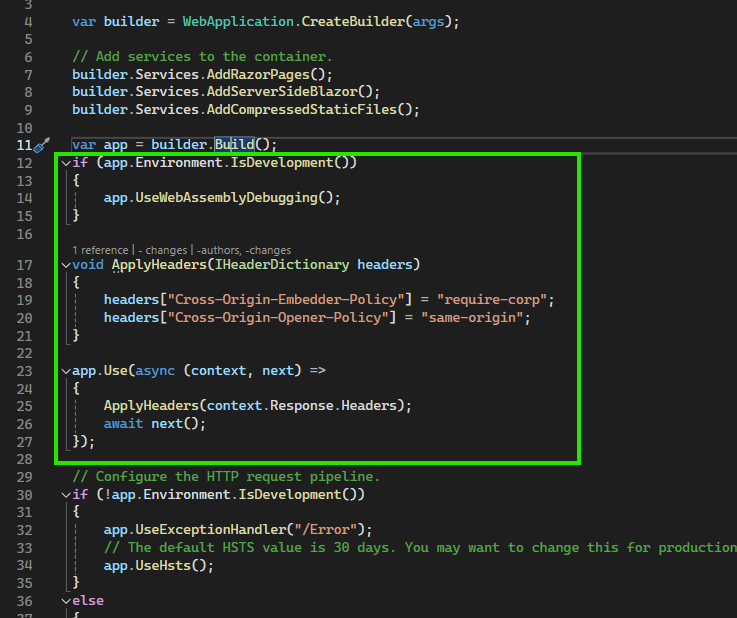

Setup Gaussian Splatting on the Web Platform
3D Gaussian Splatting requires special care and manual work to run on the Web platform.
To render Gaussian Splatting, Evergine internally creates a separate thread to perform a sorting algorithm for all splats. Due to .NET idiosyncrasies with WASM and the Web platform, you will need to follow these steps:
Setup Gaussian Splatting in Your Web Application
Prior to these steps, you need to:
- Properly set up the rest of the requirements provided in the Getting Started document.
- Ensure that your Evergine application has a valid Web profile.
1. Add the Evergine.GaussianSplatting.Web NuGet Package
Add the Evergine.GaussianSplatting.Web NuGet package to your Web profile project (typically named [ApplicationName].Web).
Note
The version must match the installed Evergine.GaussianSplatting add-on version.

2. Register a Gaussian Splatting Sorter for the Web
Now that you have added the NuGet package, add the following code in the Program.cs file in the same project, inside your Run() method:
// Register GSplat sorter.
application.Container.Register<IGSplatSorter, WorkerGSplatSorter>();

3. Add the JS File to Your index.html
In your index.html file, add the following line at the end of the file:
<script type="text/javascript" src="evergine_gaussiansplatting.js"></script>

4. Configure Web App Headers for Multithreading
To launch web worker threads in the web environment, add the following code to your Program.cs file located in your [ApplicationName].Web.Server project, just after the var app = builder.Build(); line. This configuration removes certain browser security restrictions related to Web Workers, allowing Evergine to create background threads safely.
if (app.Environment.IsDevelopment())
{
app.UseWebAssemblyDebugging();
}
void ApplyHeaders(IHeaderDictionary headers)
{
headers["Cross-Origin-Embedder-Policy"] = "require-corp";
headers["Cross-Origin-Opener-Policy"] = "same-origin";
}
app.Use(async (context, next) =>
{
ApplyHeaders(context.Response.Headers);
await next();
});

Configure Headers in the React Template (Vite)
If you are using the Evergine React template, you must also configure the same headers in your SPA project so that local execution works correctly.
Since Vite is used as the development server, update your vite.config.ts file to include the following:
plugins: [
plugin(),
{
name: 'configure-response-headers',
configureServer: (server) => {
server.middlewares.use((_req, res, next) => {
res.setHeader(
'Cross-Origin-Opener-Policy',
'same-origin'
);
res.setHeader(
'Cross-Origin-Embedder-Policy',
'require-corp'
);
next();
});
},
},
],